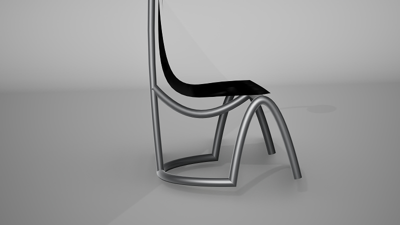
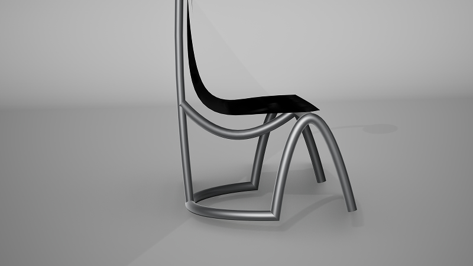

Noctu
Noctu es una silla de trabajo diseñada para jornadas de alta concentración nocturna. El proyecto se basa en el estudio del lenguaje de diseño de la Silla SZ15 "T Spectrum" de Kwok Hoi Chan, del cual se extrajo una identidad formal para crear un producto completamente nuevo que evoca los conceptos de escultórico, minimalista, ligero y moderno. Su diseño presenta una estructura continua y escultural, con un asiento tipo hamaca innovador que garantiza una ergonomía adaptativa, distribuyendo el peso uniformemente y eliminando puntos de presión. La funcionalidad se completa con una lámpara posterior integrada que proporciona iluminación focal y crea una atmósfera íntima. Fabricada en acero inoxidable y cuero negro, Noctu ofrece una solución durable y atemporal que aporta serenidad y foco al espacio de trabajo.
 
